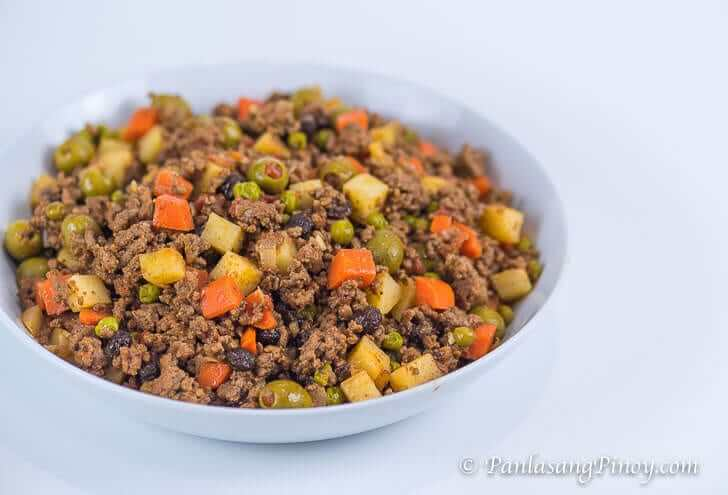

Picadillo Recipe

What is Picadillo?
Picadillo is a dish with ground meat, tomato, potato, and carrots as basic ingredients. This is usually cooked using ground beef and/or ground pork, depending on the country of origin of the recipe.
Ingredients
- Ground beef
- Tomatoes
- Raisins
- Olives
- Potatoes
- Carrots
- Green peas(Guisantes)
Steps/Instructions
- Prepare the ingredients
- Saute garlic, onion, and ground beef
- Add tomato, beef broth, and raisins
- Add the remaining ingredients
- Season it
- Serve and enjoy!
Return to main page